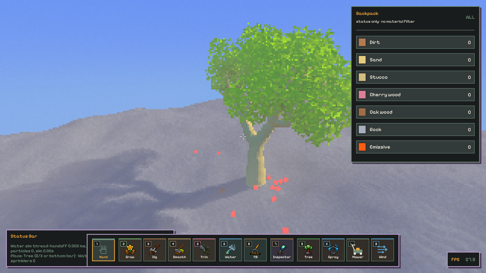
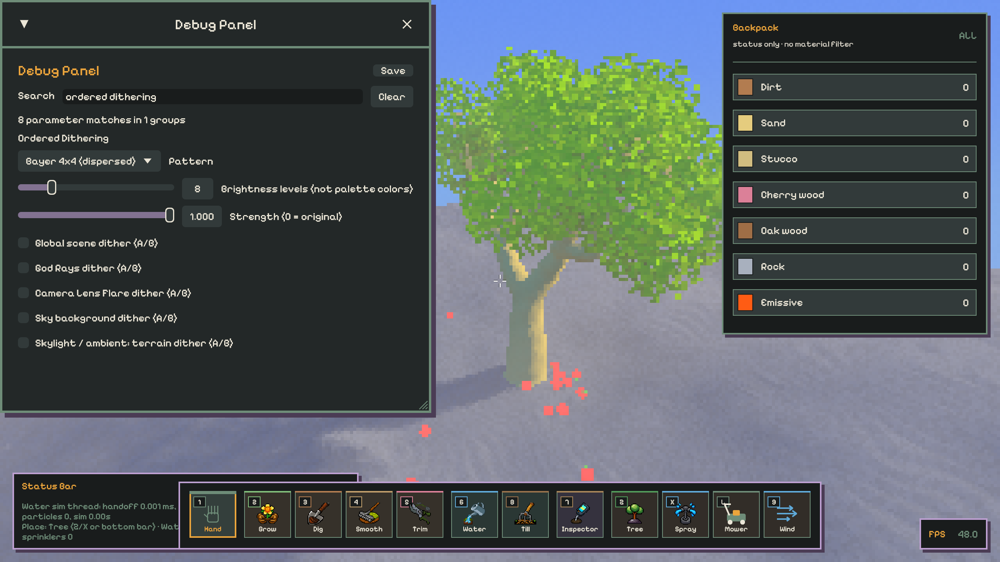
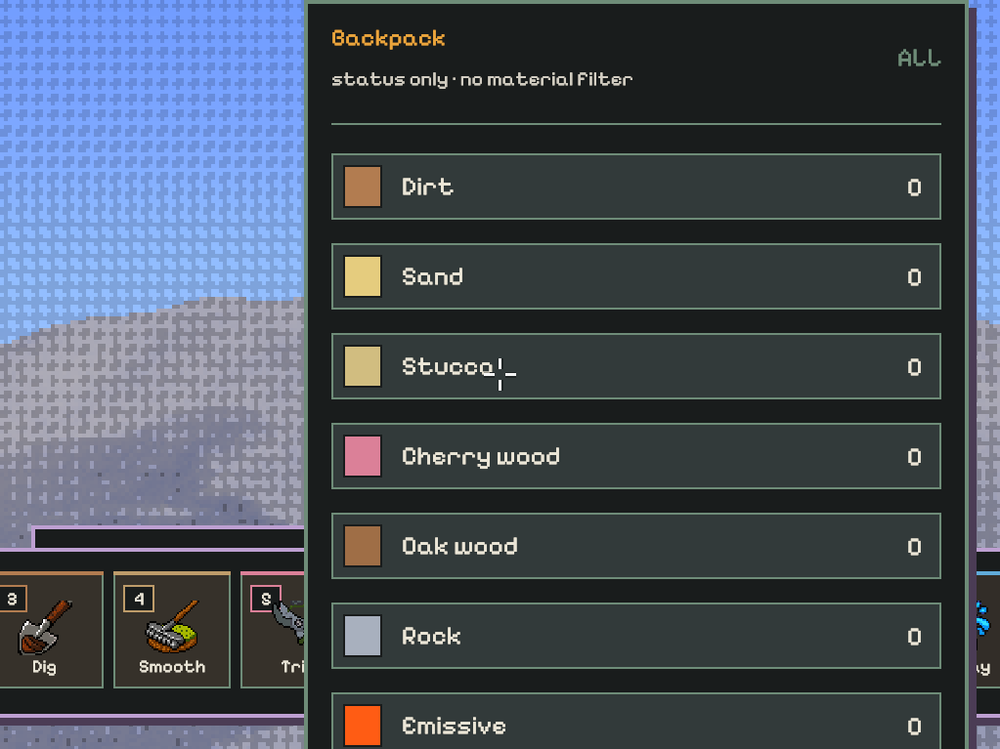

规律像素，而不只是
看不见的防色带噪声
Re: Flora 有序 dither 实验。保留原效果的运行时 A/B；Bayer 与聚簇 halftone 共用一个量化函数，按最终 Scene Pixel Sampling 像素格定位。真实游戏 PNG 与 Canvas 算法模拟 分开展示。此页没有 CDN、远程图片或在线依赖。
基线 d9f5a66a · 渲染实现 5ab43c44 · 捕获日志本地日期 2026-10-06（UTC 2026-10-05） · NVIDIA RTX 3060 Ti / Vulkan / sRGB swapchain。
1 · 真正的原生 Release A/B
下面只是显示已捕获的游戏 PNG，不是 Canvas 重绘或网页模拟。同一 App 进程依次切换真实保存字段：原效果 → global Bayer → halftone → 各局部开关 → global 优先 → 强度零 → 切回原效果。共同参数：8 个 brightness levels、强度 1、64:1 最终分辨率、4-to-1 source density、Contrast-aware resolve；“零强度”例外为 0。不同截图有动态世界/计数差异，不是冻结时间的全图逐像素对照。

花园里 global 的格纹覆盖天空、树叶、树干与地形；右侧 Backpack 和下方 HUD 保持原生。单独天光只改变地形接收环境光，树叶不会随该局部开关被量化。
实际观察：Bayer 有明显棋盘/交叉线；halftone 是更团簇的点/斜块。8 阶、强度 1 已很显眼，绝不是原 ±1 LSB 防色带噪声。God Rays 在此场景较强，会出现深蓝混合档；局部天光较温和。默认花园看不到明显 lens flare，已另拍朝向太阳的同进程比较，能看到 flare 周围有序明暗点。两种图案都可能遮盖细节、随物体移动产生 screen-fixed swimming；这是候选观察，不是美术认可。
原生 GUI：可搜索、保存、实时 A/B（英文控件）
在 Debug Panel 搜索 ordered dithering；八个参数集中在一个组中。Pattern / Brightness levels / Strength 在前，受影响的场景/效果在后。所有 checkbox 默认未勾选，统一 Save 保存；搜索中的真实鼠标点击与保存重载有 Rust 回归测试。

Partial blocks：1023 × 767 的真实原生截图
16 阶段 native grid 测试覆盖四档 ratio、两种 source density、两种 resolve；该截图为奇数尺寸、16:1、Contrast-aware。右/下边缘 cell 被裁切而非拉伸。没有修改既有 barrier 或青边修复。

2 · 同源图、同色阶的 pattern 比较
以下全部是 Canvas / JavaScript 算法模拟，不是 GPU 或游戏截图。输入为合成 encoded RGB；模拟 final display brightness 的量化，不模拟游戏 HDR 光照、tone-map、DDGI、透明合成或 Contrast-aware。不会把每通道独立取整拼成新色。
共用 320 × 180 个模拟 cell。色阶指最大 encoded RGB 分量的档数，不是全图颜色总数。低档位可能变黑，降低强度可混回原色；强度 0 时所有比较卡应等同源图。网页没有新增游戏里的调参模式。
Bayer 4×4 rank
分散点，16 个不同 rank。原生候选；小尺度重复非常规整。
Halftone 4×4 rank
聚簇点，ImageMagick h4x4o 的 rank 顺序。原生候选；不是 blue noise。
量化只选一份颜色比例
peak = max(encodedRGB)
q = (floor(peak·(N−1)) + [frac > threshold])/(N−1)
RGB' = RGB · lerp(peak,q,strength)/peak
零强度/未开启在转换前 early-return。HDR 局部贡献先用扩展 sRGB 表示，阶继续延伸到 1 以上；最终 global 才在 tone-map 后的显示范围量化。
3 · Sky background ≠ 蓝色天光
| 英文控件 | 实际作用位置 / 边界 |
|---|---|
| Global scene dither (A/B) | 所有 scene 渲染结果（地形、raster 模型/植被/粒子、光照、天空、玻璃、相机效果）合成并 tone-map / 完整 RGB resolve 之后；HUD / Debug UI 之后才绘制，不被量化。Global 开启时跳过所有局部量化和 legacy LSB，防止重复量化。 |
| God Rays dither (A/B) | temporal visibility 已完成后，在 composition / glass resolve 对最终 ray 混合 weight 做标量阶。保留 ray color 整份 tuple；pattern 不进入 history。 |
| Camera Lens Flare dither (A/B) | temporal HDR flare bilinear 采样后、相加前，按同一 RGB ray 做 brightness 阶。HDR 不在这里 tone-map、不截断到 1；玻璃缓存只在局部 A/B 开启时把相机效果移到最终 scene cell，原路径不变。 |
| Sky background dither (A/B) | 可见天空/太阳/星空背景贡献。不是天光照明开关。不修改 authored sky radiance 或 DDGI atlas；透过玻璃的光照由 global 统一覆盖。 |
| Skylight / ambient: terrain dither (A/B) | 正常 hybrid 地形接收的 diffuse environment（天空 + DDGI 反弹的混合量），在乘 albedo 前；不改变 direct/local/emission，不改变 physical capture。reference / diagnostics、植被/模型的 vertex/cached irradiance、玻璃间接光不由此局部开关控制。没有纯“蓝天空”buffer，因此不按蓝通道挑颜色假装分离光源；跨路径统一用 global。 |
两种候选共享 shader/slang/ordered_dither.slang。局部坐标由 authoritative final coarse scene extent 映射；global 直接使用现有 scenePixelCoordinate。四档 ratio、两档 source density、两种 resolve、whole-color 青边修复和 native UI 保持不变。取消勾选与 Strength 0 等价；偏好仍保存，global 只是优先覆盖而不是删掉局部值。
证据边界：Contrast-aware 选已有整份 RGB，保证 resolve 不 splice source channels。Dither 会创造同一 encoded 色系的明暗档，不能再保证“最终颜色属于原样本集合”，也不是完整 indexed-palette 算法；感知色相可能随明暗改变。
4 · 一手材料与研究结论
读取了以下正文/源代码，而不是把搜索摘要当审计。访问均成功，未出现 403；可变 main URL 只代表本次实际读到的实现，未审计完整项目或商业游戏私有源码。
- Lucas Pope · Obra Dinn 2014-07（#181–194）：作者区分 ordered 重复阈值与顺序误差扩散，亲自比较 Bayer / ordered blue noise，并讨论缩放、视频压缩。不能据此推断所有像素游戏都用同一种算法。
- Lucas Pope · 2017-11（#767）：8-bit grayscale → 1-bit；8×8 Bayer / 128×128 blue-noise；具体说明 screen offset、sphere mapping、supersampling 的运动稳定化折衷。本实验没有复刻 Obra Dinn 的稳定化，screen-fixed pattern 仍会 swim。
- Aseprite 官方 API 与 ordered_dither.cpp：实际检查 D2={0,2,3,1}、两个完整 palette index 的选择，以及 OrderedDither2 的混色搜索。它不是逐通道中位数；我们的 brightness 阶也不等同完整 palette 搜索。
- ImageMagick thresholds.xml：实际读取 o4x4 / h4x4o 数表和来源注释。实验只借 rank 顺序，规范化成
(rank+0.5)/16，不是照搬原文件 level/17。 - Joel Yliluoma · Arbitrary-palette positional dithering：审计开头、standard ordered 的 palette-spacing 限制及 algorithm 1 的完整颜色对/比例搜索。页面用了 Chrono Cross 源图作量化示例，不能说 Chrono Cross 原游戏采用该算法；未审计后续全部变体。
项目选择：先用少量明确、便于在 runtime 比较的规律图案；不把 hash 叫 blue noise，不为重复阈值额外暴露无真实需求的 tile-size/seed 参数。亮度阶适应可编辑材质与 HDR 相机效果，成本/视觉均应实测；下一阶段若需要完整 palette，应单独建立稳定的 palette owner，而不是再次叠一层每通道 posterize。
5 · 可复现证据与已知限制
cargo fmt --check、CARGO_BUILD_JOBS=2 cargo check、完整cargo test、python3 scripts/run_slang_tests.py与cargo build --release。Slang CPU 35 项；Rust 1346 + library 4 项通过，3 ignored。生成字段/struct 从 source 自动再生，没有手改。- 隐藏静音 smoke 以及 garden / sun / glass / grid / GUI，共 50 张原生 PNG；grid / glass / sun 强制 Khronos validation，无 ERROR / panic / VUID，正常退出
failures=0。所有 GPU native 运行串行使用flock --close /tmp/re-flora-summer-gpu.lock，没有启动可见游戏。 - 真实像素 ROI：9 张花园图，每张左上
1024×256的 4096 个 8×8 scene blocks 均内部一致；Backpack500×650+1920+60的 RGBA hash 全相同。原效果、零强度、切回原效果的静态天空 ROI hash 也完全相同。范围仅限这些 ROI，不夸成动态全图 bit-exact。 - GUI 实际鼠标输入测试覆盖五个 A/B 搜索后点击、统一 Save / reload；通用遍历覆盖 pattern / levels / strength 持久化；旧文件/不完整 section 补缺省且保留原值。native runs 未写 gui.toml 或 camera snapshots。此页以独立 agent-browser 会话做了 offline 重载与实际控件操作，33 张 A/B 图片均加载，390px 无页面横向溢出，console/page errors 为空；会话已关闭。
- 没有专项 Release 性能测量或性能验收。截图 FPS / 单帧数值不当 benchmark。这里只做可用的视觉/正确性候选；未获用户视觉批准，尚未验证长时间移动、所有光照时段、所有物体/颜色组合或其他 GPU/平台。
运行证据（SHA-256、阶段日志、命令、validation 模式）见 本地 evidence.json。完整本工作区日志保留在 target/ordered-dither-native/，不跨 worktree 取日志。
复现命令与 GUI 比较方法
CARGO_BUILD_JOBS=2 cargo build --release
node scripts/validate-ordered-dither.mjs smoke
node scripts/validate-ordered-dither.mjs compare
node scripts/validate-ordered-dither.mjs sun
node scripts/validate-ordered-dither.mjs glass
node scripts/validate-ordered-dither.mjs grid
node scripts/validate-ordered-dither.mjs gui
# 脚本拒绝已有 evidence 目录，避免混入旧截图；移到另一自有路径后重跑。
# 强制 validation：用本机 Vulkan SDK 的 VK_LAYER_PATH，
# 再设置 VK_INSTANCE_LAYERS=VK_LAYER_KHRONOS_validation。
Debug Panel → Search: ordered dithering
保持 Scene Pixel Sampling 同档位/同 density/同 resolve。
先只勾 Global scene dither；在 Pattern 里切 Bayer / Halftone。
再取消 Global，逐个比较 God Rays / Camera Lens Flare / terrain ambient。
测试 Lens Flare 时朝向可见太阳；Sky background 不等于天光。
Brightness levels 先 8，再 4 / 16；Strength 0 与取消勾选回原效果。
点击统一 Save 保存偏好。没有自动启动可见游戏。